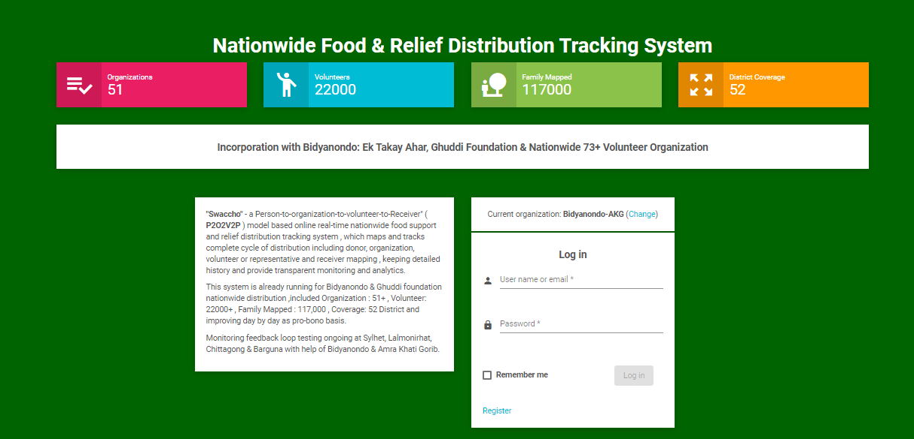
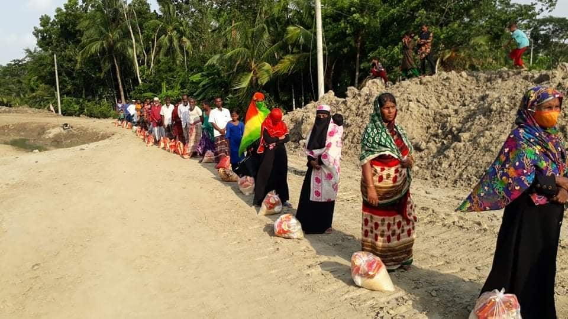
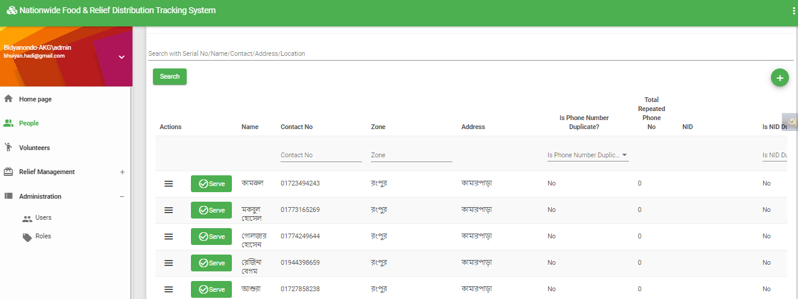
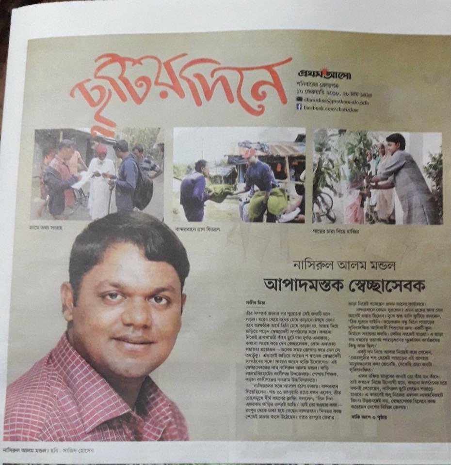
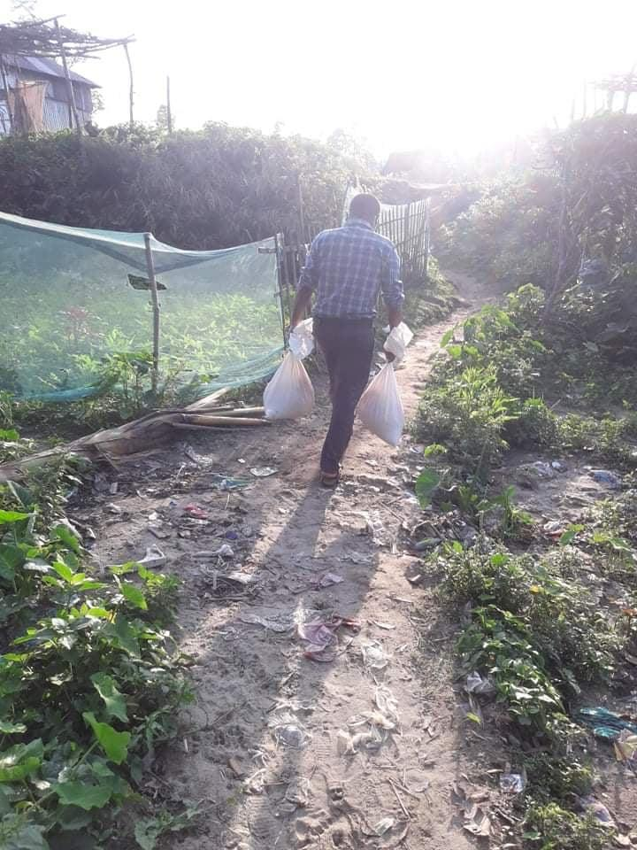

Swaccho is a Donor-to-Organization-to-Volunteer-to-Receiver model based, online real-time nationwide food & relief support distribution tracking system — mapping the complete cycle with transparent monitoring and analytics.

Bangladesh stands resilient against natural disaster. During COVID-19 and disaster, many organizations worked relentlessly to support distressed people locally and nationwide — but scattered, uncoordinated effort limits reach and trust.

Distribution at Kurigram · Original photo, permission takenSwaccho maps and tracks the complete distribution cycle — donor, organization, volunteer or representative, and receiver — keeping detailed history and providing transparent monitoring and analytics.
Every donor, organization, volunteer and receiver is mapped into a single traceable chain of custody.
Online, real-time status of food & relief support as it moves across the country.
Detailed history and analytics give every stakeholder a clear, auditable view of impact.
Already running for Bidyanondo & Ghuddi Foundation nationwide distribution. Monitoring feedback-loop testing is ongoing at Sylhet, Lalmonirhat, Chittagong & Barguna with the help of Bidyanondo & Amra Khati Gorib — improving day by day, on a pro-bono basis.

Swaccho's core chain flexes to fit real programs — centrally-managed food packs, direct cash disbursement, mobile financial services and local-merchant-based support.
Streamline merchant-based support with automated disbursement flows.
Adapt to each partner's requests and operating model.
Deeper insight for donors, organizations and administrators.
Secure integration so partners can share and co-relate data safely.
Architecture ready to grow far beyond current coverage.
With thanks to the ICT Ministry for the chance to showcase our solution.
Solution Architect · Volunteer
Lead — CommEngine, Dhaka · Volunteer — AKG, Bidyanondo, Ghuddi
Dalgram High School, Lalmonirhat · A2I Ambassador

Volunteer operations on the ground — recognised in national press for relentless door-to-door relief distribution during the pandemic. Field delivery reaching the last mile, one household at a time.

Last-mile delivery in the fieldA transparent, data-driven way to make sure relief reaches the people who need it — across all 52 districts of Bangladesh.
Back to top ↑